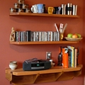

Kitchens
Tongue and groove cedar cabinet. Copper top.
Oak sideboard cabinet. Hand-forged butterfly hinges and grips.
Reclaimed oak plate rack.
Thoughtful cabinetry updates This 150 year old kitchen while maintaining a vintage feel.
Red oak farm sink vanity. Hand-forged iron hardware.
Reclaimed Oak cabinet "grows" out of the sink vanity & stone wall.
Restored mid-century modern vanity. Top is slate with reclaimed oak trim.

Floating red oak shelves. Butcher block is red oak, white oak, and walnut.
Cedar cabinet maximizes storage space with thoughtful door placement and no interior partitions.
Backless oak wall cabinet appears to float on plaster wall.
Wine Cabinet. Made from reclaimed wine barrel stave.
Worn pine stairs. Many different materials come together with crisp lines.
Carpentry Done Well
To talk to me about your project:
telephone: 540.336.6758 or
e-mail: Jeff.Welpott@BuildWellCarpentry.com
BuildWell is licensed with a Commonwealth of Virginia Class B "Builders" Contractor License